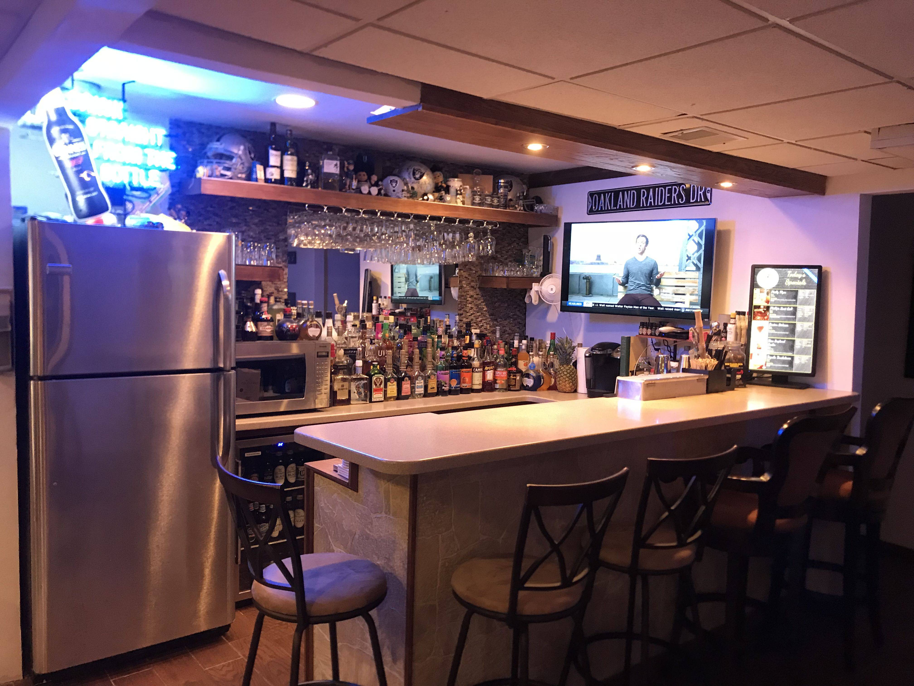

<div class="page-wrapper">
    <h1 class="page-title">Home Bar Management Application</h1>
    <div class="information">
        This application manages recipes, inventory and 5 selected specials for a Bar. Select an menu option below:
    </div>
    <button mat-button [matMenuTriggerFor]="menu"><mat-icon svgIcon="menu"></mat-icon></button>
    
    <mat-menu #menu="matMenu">
    <button mat-menu-item [routerLink]="['/recipe-list']"><mat-icon svgIcon="format-list-checkbox"></mat-icon>Recipe List</button>
    <button mat-menu-item [routerLink]="['/specials-list']"><mat-icon svgIcon="clipboard-list"></mat-icon>Today's Specials Board</button>
    <button mat-menu-item [routerLink]="['/bartender-special-list']"><mat-icon svgIcon="glass-tulip"></mat-icon>Bartender View</button>
    <button mat-menu-item [routerLink]="['/occasion-configuration']"><mat-icon svgIcon="cog-outline"></mat-icon>Menu Board Configuration</button>
    <button mat-menu-item [routerLink]="['/inventory']"><mat-icon svgIcon="alpha-i-box"></mat-icon>Bar Inventory</button>
    <button mat-menu-item [routerLink]="['/shopping-list']"><mat-icon svgIcon="cart-outline"></mat-icon>Shopping List</button>
    </mat-menu>
    <!-- <div class="push"></div> -->
</div>
<footer class="footer">
    <span class="footer-text"> Created by and for Brian Zimmerman - 2020</span>
</footer>